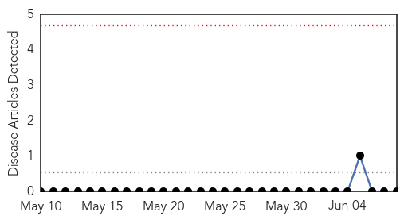
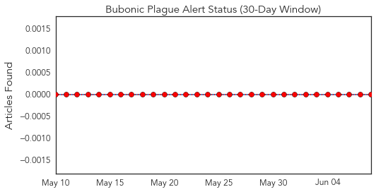
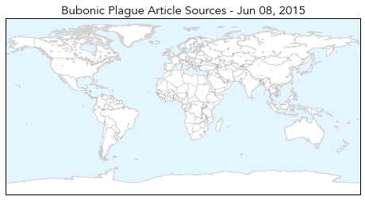
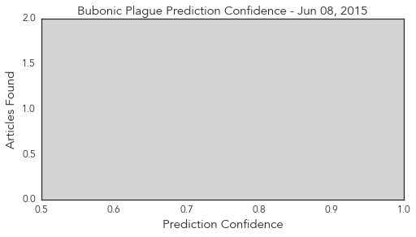
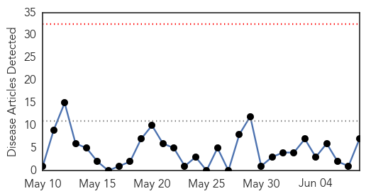
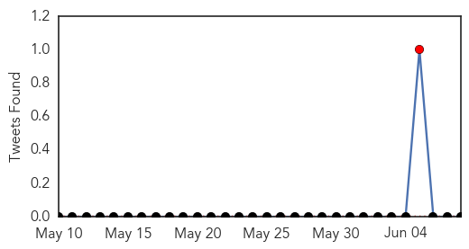
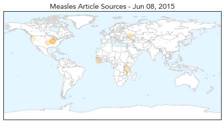

Bubonic Plague
30-Day Web Trend
0 alerts, 0 warnings

30-Day Twitter Trend
0 alerts, 0 warnings

Article Locations
Article Confidences
Top Articles:
-
No articles found for Jun 08, 2015
Top Tweets:
-
No tweets found for Jun 08, 2015
Measles
30-Day Web Trend
0 alerts, 0 warnings

30-Day Twitter Trend
1 alerts, 0 warnings

Article Locations
Article Confidences

Top Articles:
- 0.967
- Health officials tracing path of woman with rare TB
- 0.923
- Woman with rare form of TB was treated in McHenry County
- 0.864
- Over 1.3 million under five children in Sierra Leone to be vaccinated against measles and polio
- 0.844
- Lack of immunity poses greater threats as children grow older, according to study
- 0.783
- One More Reason Why Vaccines Matter
- 0.695
- Lack of medicines in Ukraine a ‘major problem’, says UN
- 0.570
- Autism Epidemic is Killing Children
Top Tweets:
-
No tweets found for Jun 08, 2015